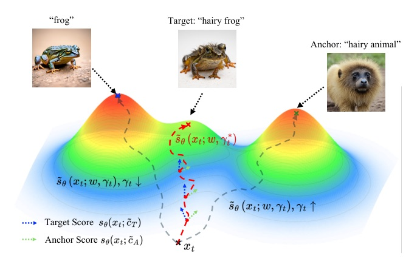
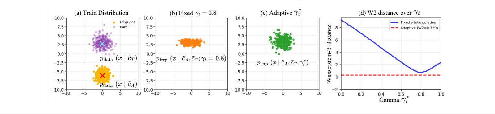
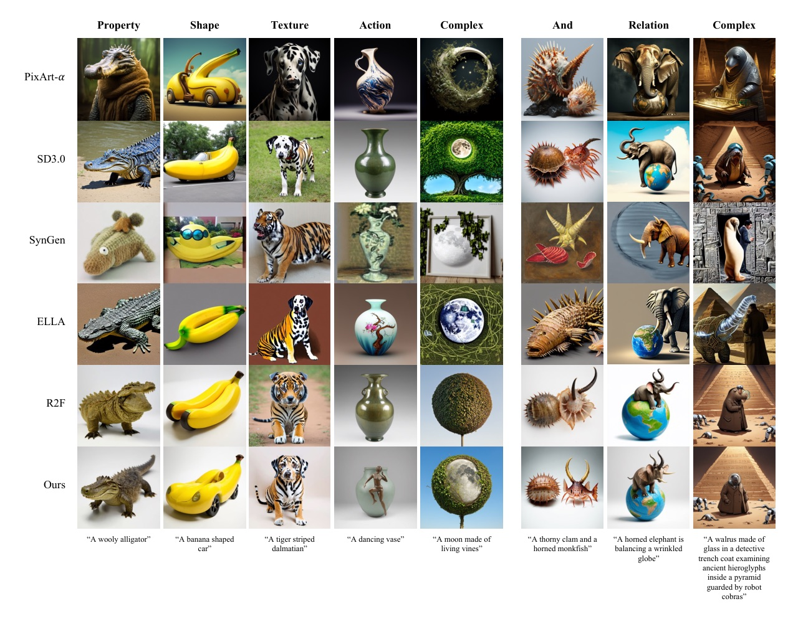
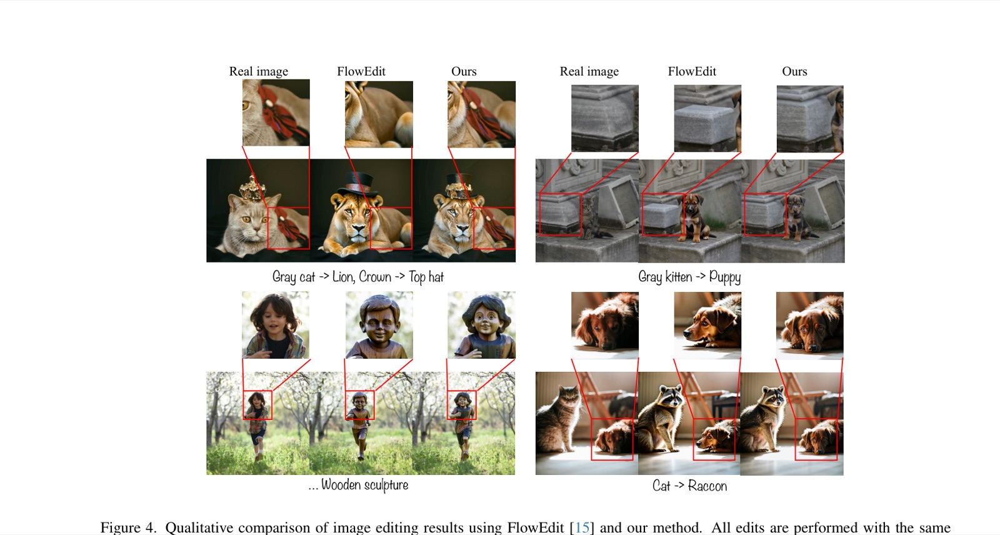
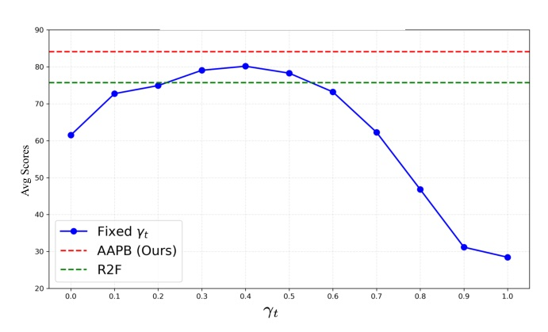
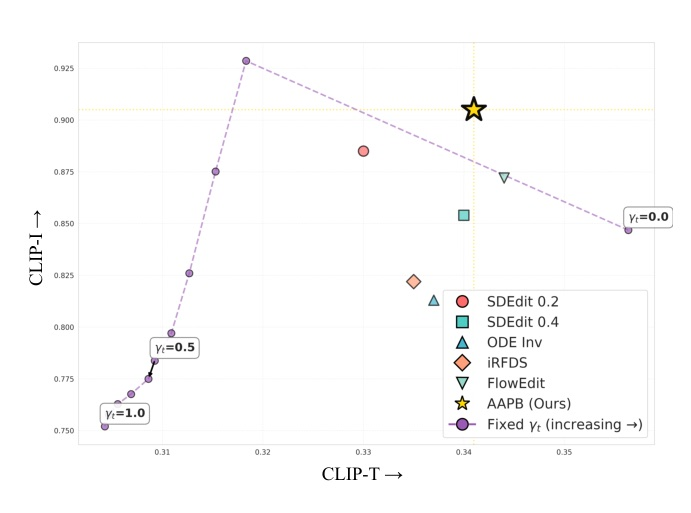
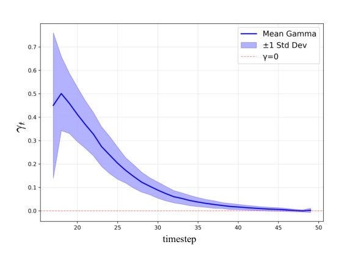
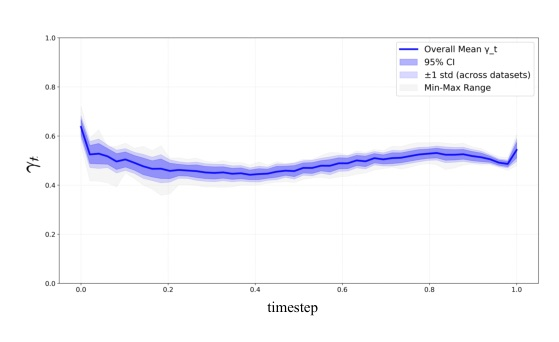
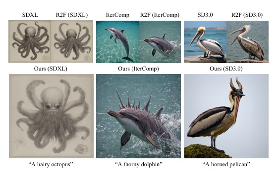
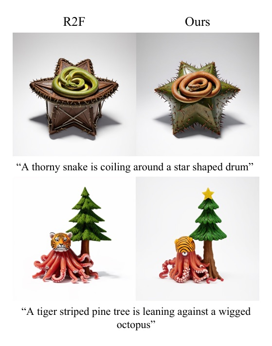

把 auxiliary prompt 從手工 schedule 變成每個 timestep 的 score-space projection。
Rare concepts drift toward high-density modes; AAPB corrects the trajectory by computing a closed-form anchor weight at every denoising step.
核心不是再訓練模型，而是在 inference score space 裡動態平衡 target fidelity 與 anchor stability。

Tweedie’s formula makes the denoised posterior mean proportional to the score, so a target-faithful image objective can be optimized in score space.

| Method | Property | Shape | Texture | Action | Complex | Avg |
|---|---|---|---|---|---|---|
| SD3.0 | 49.4 | 76.3 | 53.1 | 71.9 | 65.0 | 63.1 |
| R2F (SD3) | 89.4 | 79.4 | 81.9 | 80.0 | 72.5 | 75.7 |
| Ours (SD3) | 96.9 | 89.4 | 87.5 | 85.6 | 80.0 | 84.1 |

Figure marked clean=false by the extractor due to a conservative body-overlap warning, but it contains the intended comparison grid.
| Method | CLIP-T ↑ | CLIP-I ↑ | LPIPS ↓ | DINO ↑ | DreamSim ↓ |
|---|---|---|---|---|---|
| SDEdit 0.2 | 0.330 | 0.885 | 0.251 | 0.634 | 0.213 |
| FlowEdit | 0.344 | 0.872 | 0.181 | 0.719 | 0.259 |
| Ours | 0.341 | 0.905 | 0.155 | 0.814 | 0.155 |



| Anchor strategy | R2F Avg | Ours Avg | Delta |
|---|---|---|---|
| Human generated | 75.9 | 82.6 | +6.7 |
| Arbitrary | 68.0 | 71.0 | +3.0 |
| objects generic | 81.6 | 83.1 | +1.5 |
| LLaMA3 | 76.4 | 81.0 | +4.6 |
| GPT-4o | 80.6 | 87.9 | +7.3 |


AAPB works when the anchor direction is useful but not trusted blindly.
The coefficient is literally a projection: keep the component that helps align with the target residual, suppress the rest.

| Backbone | Avg gain over R2F |
|---|---|
| SDXL | +12.7 |
| IterComp | +17.0 |
| SD3.0 | +8.4 |
The paper reports consistent gains across architectures and training settings.
| Setting | Baseline | Ours | Interpretation |
|---|---|---|---|
| Rare concept time | R2F 26.12s | 37.94s | extra score blending / evaluations |
| Rare concept peak memory | 31.76GB | 32.22GB | small memory increase |
| Image editing time | FlowEdit 7.41s | 7.54s | near-neutral |
| Image editing peak memory | 19.97GB | 19.97GB | no reported increase |

Also note a slight LAION-aesthetic trade-off: Ours 6.191 vs SD3.0 6.317 on Tab.10.
“when the target concepts lie in low-density regions of the training distribution, these models often fail to produce faithful or structurally consistent results.”
當目標概念位於訓練分布低密度區域時，模型常無法忠實或結構一致地生成。§1 p.1
“we derive a closed-form adaptive coefficient that dynamically balances the contributions of the target and anchor at each diffusion step.”
作者推導閉式自適應係數，在每個 diffusion step 動態平衡 target 與 anchor。§1 p.2
“optimizing for target-faithful generation in image space is equivalent to minimizing score-space error.”
在影像空間追求 target-faithful generation，可等價轉成最小化 score-space error。§4.1 p.4
“no single fixed coefficient can maintain optimal alignment throughout the diffusion process.”
沒有任何單一固定係數能在整個 denoising 過程維持最佳對齊。§5.2 p.7
“it still inherits the inherent limitations of CLIP-based text encoders.”
方法仍繼承 CLIP-based text encoder 在多屬性物件綁定上的限制。§21 p.18
影片生成 / 時序模型